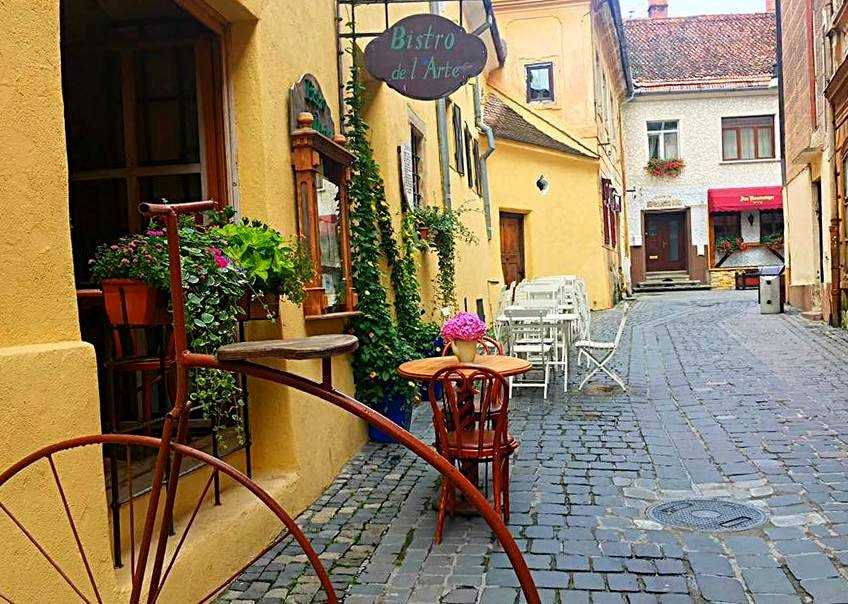
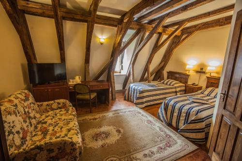

Unde Mănânci & Te Cazezi

Restaurant La Ceaun
Un loc îndrăgit care oferă mâncare românească tradițională cu un twist modern, într-un decor rustic.

Bistro de l'Arte
Un bistro artistic care servește bucătărie europeană – perfect pentru o seară relaxantă în centrul vechi.

Hotel Aro Palace
Hotel de 5 stele cu camere elegante, spa și priveliști uimitoare către Muntele Tâmpa și Piața Sfatului.

Casa Wagner
O pensiune fermecătoare situată în inima centrului istoric al Brașovului, ideală pentru cupluri și familii.